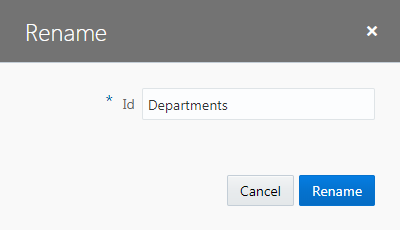
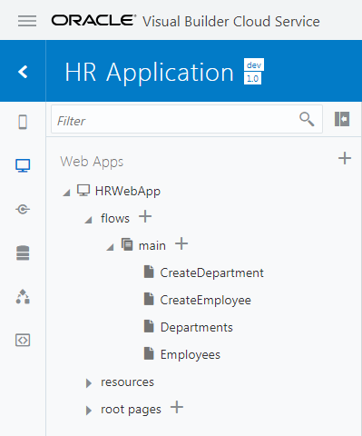
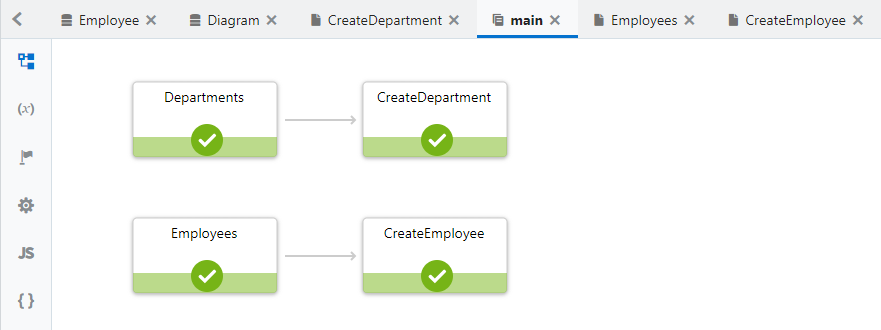
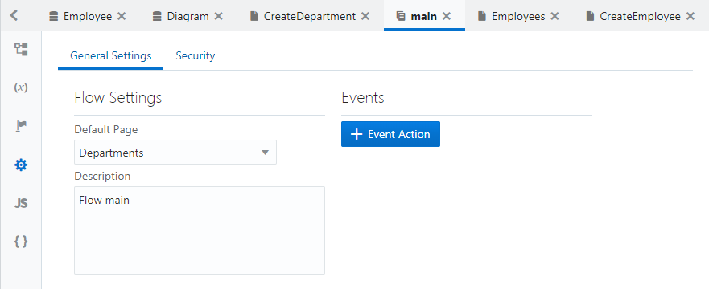

Oracle VBCS はじめての Web アプリケーション開発 > パート3: データを参照・作成するページの作成
ページの名前の変更
このパートではここまでに、次の3つのページを新たに作成しました。
- CreateDepartment（部門レコードの作成） -- ビジネス・オブジェクト Department のレコードを作成
- Employees（従業員一覧） -- ビジネス・オブジェクト Employee の一覧を表形式で表示
- CreateEmployee（従業員レコードの作成） -- ビジネス・オブジェクト Employee のレコードを作成
これらのページにあわせて、main-start ページの名前を Departments に変更してみます。
【ステップ 1】
アーティファクト・ブラウザの 「Web Applications」 タブ・ページで 「HRWebApp」 → 「flows」 → 「main」 ノードを展開し、 「main-start」 ページを右クリックします。
【ステップ 2】
「Rename」 ダイアログ・ボックスが表示されたら、 「Id」 を main-start から Departments に変更し、 「Rename」 ボタンをクリックします。

【ステップ 3】
アーティファクト・ブラウザで、main-start ページが Departments に変更されていることを確認します。

【ステップ 4】
アーティファクト・ブラウザで、 「main」 ノードをクリックします。
 タブ・ページで main-start ページの名前が Departments に変更されていることを確認します。
タブ・ページで main-start ページの名前が Departments に変更されていることを確認します。

【ステップ 5】
アプリケーション・デザイナの
 （Settings）をクリックします。
「Default Page」 で、 「Departments」 が選択されていることを確認します。
（Settings）をクリックします。
「Default Page」 で、 「Departments」 が選択されていることを確認します。
